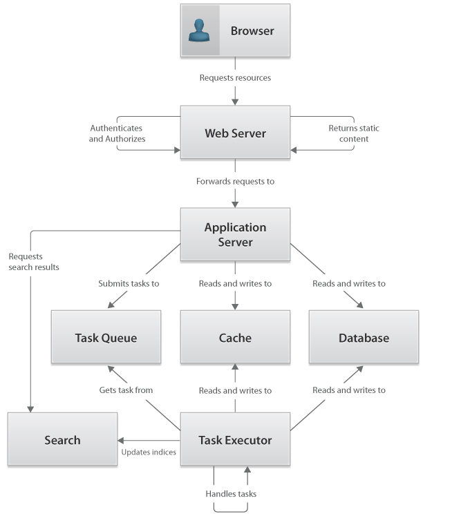

Eureka Streams

Home > Technical Specification > Conceptual architecture Conceptual architectureLogical architecture Meta-architecture OverviewThe conceptual architecture provides a high component view of the system architecture including the relationship between components. Also included are the architecture decisions, trade offs, and principals that are pervasive in the architecture. Conceptual architecture diagram ComponentsBrowserThe browser provides resource retrieval and execution tied to the presentation of the system. The browser is responsible for requesting static content, executing browser-side code, and request additional resources. The static content is retrieved from the Web server. Additional dynamic resources are retrieved from the application server through the Web server where the Web server is acting as a request proxy. The browser must authenticate itself with the Web server and is authorized based on its login credentials. Web ServerThe Web server provides the security capability of authenticating and authorizing the user, returning static content, and proxying dynamic content to the application server. There are configuration options for user authentication and authorization. One option makes the Web server responsible for authenticating the user. After successful authentication, a pre-determined key is passed with the value being the username of the authenticated user to the application server. Another configuration option is to allow the Web server to pass the request onto the application server leaving the authentication responsibility onto that component. Dynamic resource requests are routed through the Web server to the application server. Application ServerThe application server is responsible for accepting dynamic resource requests, executing the appropriate actions, and returning the results. These dynamic requests are proxied though the Web server over the AJP 1.3 protocol. The application server is also responsible for maintaining connections to other system components like the cache, database, task queue, and other required enterprise resources like LDAP and Mail gateway. CacheThe cache is responsible for providing fast, in memory storage for key/value pairs. The cache is temporal and is organized for quick retrieval and usage in dynamic requests. DatabaseThe database is responsible for providing persistent storage of system data. The database is organized following standard data normalization rules providing relationships between tables and constraints where necessary. The database exhibits the ACID properties for data integrity. SearchThe search is responsible for accepting search requests and returning results based on indexed data and custom logic. The search accepts items to be indexed and incorporates these items into its indexes to make the items available as results. Task QueueThe task queue server is responsible for accepting inbound and outbound connections to the task queues. Inbound connections allow messages to be added to the queue while outbound connections allow messages to be removed from the queue. The task queue supports two types of queues: a queue for tasks that are to be executed and a queue for items to be indexed by the search component. The tasks executor is responsible for consuming both types of messages and perform the necessary steps to satisfy them. Task ExecutorThe task executor is responsible for receiving task requests and handling them. The task executor retrieves tasks from the task queue and handles these tasks resulting in updates to the cache, the database, or both. | PAGE CONTENTSVersion 1.1 Documentation is also available for all of the following versions: |